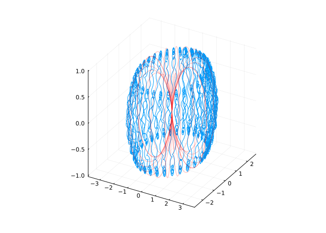
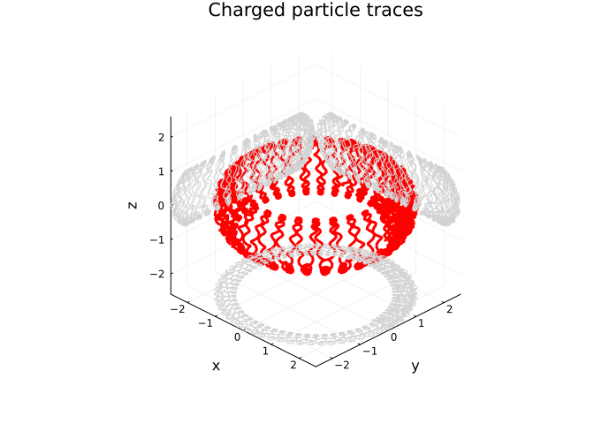

Code
using TestParticle
using TestParticle: getB_dipole, getE_dipole, sph2cart, Rₑ
using OrdinaryDiffEq
using Plots
using StatisticsIn diesem Abschnitt demonstrieren wir die numerische Simulation der Teilchenbewegung.
Wir benutzen einen ODE-Löser des Julia-Pakets OrdinaryDiffEq. Außerdem verwenden wir TestParticle.jl, ein Julia-Paket zum bequemen Berechnen der Bewegungsbahnen geladener Teilchen in Dipolfeldern.
Die Visualisierung erfolgt mit Plots.jl.
using TestParticle
using TestParticle: getB_dipole, getE_dipole, sph2cart, Rₑ
using OrdinaryDiffEq
using Plots
using Statisticsfunction fieldline(ϕ::Float64, L::Float64=2.5, nP::Int=100)
xyz = [ sph2cart(L * sin(θ)^2, ϕ, θ) for θ in range(-π,stop=π,length=nP) ]
x = Vector{Float64}(undef, length(xyz))
y = Vector{Float64}(undef, length(xyz))
z = Vector{Float64}(undef, length(xyz))
for (i, pos) in enumerate(xyz)
x[i], y[i], z[i] = [pos...]
end
return (x, y, z)
endfieldline (generic function with 3 methods)function plot_iso3d(xs, ys, zs;
lw=3, lc=:red,
title="Isometric 3D plot",label=false,
camera=(45,30))
x12, y12, z12 = extrema(xs), extrema(ys), extrema(zs)
d = maximum([diff([x12...]),diff([y12...]),diff([z12...])])[1] / 2
xm, ym, zm = mean(x12), mean(y12), mean(z12)
# plot data
p = Plots.plot(; xlabel="x",ylabel="y",zlabel="z", aspect_ratio=:equal, grid=:true)
Plots.plot!(xlims=(xm-d,xm+d), ylims=(ym-d,ym+d), zlims=(zm-d,zm+d))
Plots.plot!(;camera=camera)
Plots.plot!(xs, ys, zs, title=title,lw=lw,lc=lc,label=label)
Plots.plot!(xs, ys, zlims(p)[1] .+ 0*zs, lw=1, lc=:lightgray, label=false)
Plots.plot!(xs, ylims(p)[2] .+ 0*ys, zs, lw=1, lc=:lightgray, label=false)
Plots.plot!(xlims(p)[1] .+ 0*xs, ys, zs, lw=1, lc=:lightgray, label=false)
endplot_iso3d (generic function with 1 method)Ek = 5e7
m = TestParticle.mᵢ
q = TestParticle.qᵢ
c = TestParticle.c;v₀ = sph2cart(c*sqrt(1-1/(1+Ek*q/(m*c^2))^2), 0.0, π/4)
r₀ = sph2cart(2.5*Rₑ, 0.0, π/2)
stateinit = [r₀..., v₀...]
param = prepare(getE_dipole, getB_dipole)
tspan = (0.0, 20.0);prob = ODEProblem(trace_analytic!, stateinit, tspan, param);sol = solve(prob, Tsit5(); save_idxs=[1,2,3])
x = getindex.(sol.u,1) / Rₑ
y = getindex.(sol.u,2) / Rₑ
z = getindex.(sol.u,3) / Rₑ;plot(x, y, z, aspect_ratio=:equal, legend=false)
for ϕ in range(0, stop=2*π, length=10)
plot!(fieldline(ϕ)..., color="red", aspect_ratio=:equal, alpha=0.3, legend=false)
end
current()
p = plot_iso3d(x, y, z, title="Charged particle traces")
p